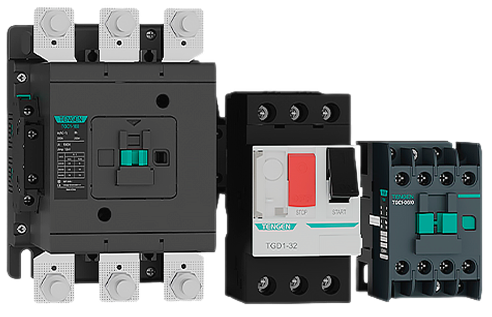

Новинка: выключатели дифференциальные
в литом корпусе серии TGM1NL(A)

Введение
Устройства предназначены для защиты электрических цепей от перегрузки, короткого замыкания и токов утечки в сетях переменного тока частотой 50/60 Гц.
Серия охватывает семь типоразмеров — от 125 до 800 А — с диапазоном номинальных токов от 16 до 800 А и номинальным напряжением до 415 В. Выключатели выпускаются в исполнениях от двух до четырёх полюсов, что позволяет применять их как в однофазных, так и в трёхфазных сетях. Оборудование соответствует требованиям МЭК 60947-1 и МЭК 60947-2.
Особенности
Дифференциальная защита реализована в широком диапазоне токов утечки — от 30 до 3000 мА, причём для ряда модификаций доступна селективная защита с настраиваемой выдержкой времени. Это расширяет возможности применения оборудования в многоуровневых системах защиты, где важна координация срабатывания между различными ступенями.
«Серия TGM1NL(A) закрывает широкий круг задач — от защиты распределительных сетей до промышленных электродвигателей. Диапазон токов и поддержка различных конфигураций полюсов позволяют применять оборудование как в жилых комплексах, так и на производственных объектах», — отметил директор по развитию TENGEN в России Игорь Бабашка.
Структура
Выключатели рассчитаны на работу в диапазоне температур от -35°С до +60°С, что актуально для эксплуатации в российских климатических условиях. Конструкция предусматривает установку аксессуаров в правый и левый слоты, межфазные перегородки входят в комплект поставки. Эффективная система дугогашения обеспечивает надёжную работу при коммутационных перегрузках.
- номинальный ток от 1А до 63А;
- количество полюсов: 1P, 2P, 3P, 4P;
- типоразмер: 63;
- характеристики: B, C, D;
- отключающая способность: 4,5kA, 6kA;
- рабочая температура окружающей среды: от -35 до +70°С;
- максимальное сечение подключаемого проводника: 25mm²;
- аксессуары.
Заключение
Механический ресурс составляет до 40 000 циклов при техническом обслуживании. Электрическая износостойкость — до 10 000. Такие показатели обеспечивают длительный срок службы при интенсивной эксплуатации на промышленных и инфраструктурных объектах.